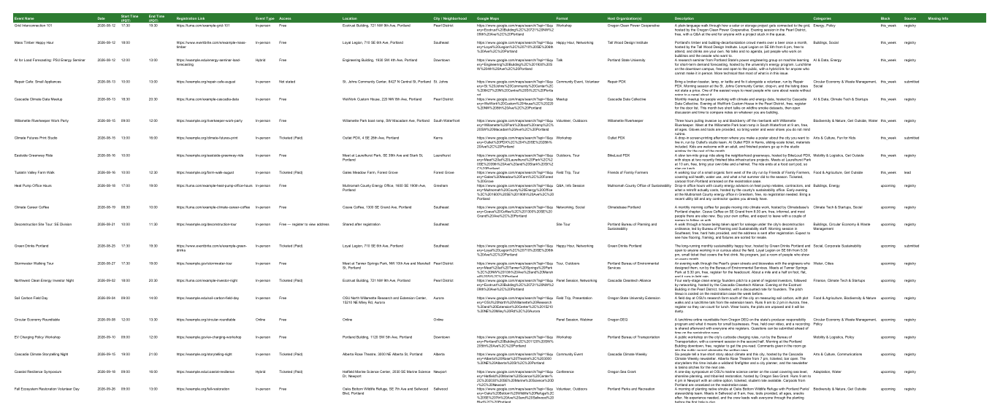

Step 07 of 08 · Every week
The weekly cycle
Claude does the lists. You write the words.
The tools collect, verify, format and draft. You choose what makes the issue and rewrite the note, the picks and the housekeeping in your own words. Every Claude stage checks its own output before handing you the file.
What the second-pass check covers
The same prompt every week. It works out where you are, runs the right skill, and stops when it needs you. The step prompts below work too, if you would rather drive.
Collect
Every source in your registry, into one spreadsheet.
YouCut
Delete rows, flag picks, upload it back.
BothAssemble and write
Claude lays out the issue. You fill the gaps it leaves.
YouSend
Check, paste into Substack, read once, send.
Collect Claude
Claude sweeps every source in your registry and hands back a spreadsheet. Everything, unfiltered, on purpose: collecting and judging are separate jobs.
It also reads the CTC event submission form for your city, and asks first whether you know of anything not on a calendar. Every row says where it came from: registry, submitted, or lead. Every link is opened and checked. Incomplete rows are shaded red and named in a Missing Info column.
What you get back
| Event Name | Date | Start Time (PDT) | Registration Link | Event Type | Access | Location | Block | Source |
|---|---|---|---|---|---|---|---|---|
| Grid Interconnection 101 | 2026-08-12 | 17:30 | luma.com/… | In-person | Free | Ecotrust Building, 721 NW 9th Ave, Portland | this_week | registry |
| Repair Cafe: Small Appliances | 2026-08-13 | 10:00 | example.org/… | In-person | Not stated | St. Johns Community Center, 8427 N Central St | this_week | submitted |
| Cascadia Climate Data Meetup | 2026-08-13 | 18:30 | luma.com/… | In-person | Free | WeWork Custom House, 220 NW 8th Ave, Portland | this_week | registry |
The time header carries your chapter's timezone. Fictional Portland chapter.

DownloadCut You
Open the spreadsheet and delete rows. No prompt: this is judgment. There is no target number. A good week is however many good events your city has.
Delete
- Outside your scope rule, which sits in your settings file for exactly this
- Not really climate
- Dead link, or no date
- Duplicates. Keep the better registration link
- Rows marked
submittedcame from a reader. Treat them like any other; if you cut one, a reply is kind
Flag
- Four to six events worth featuring, about one per day that has events
- Type PICK in a spare column beside each
- Favour free, newcomer-friendly, in person, hard to find elsewhere
- Claude reads the PICK column at the next step
Assemble and write Both
Paste the prompt, attach your edited spreadsheet. Claude asks three questions and builds the issue.
Two files come back, Word and HTML. Send from the HTML file. It holds its formatting in Substack.
Three questions first
- Which events are the picks?Reads your PICK column and confirms. Otherwise lists this week's events and suggests four to six.
- Any opportunities this week?Offers from your opportunities file if it is in the project, nearest deadlines first. Otherwise give a name, link and deadline, or say none and the block is left out.
- Anything the sheet cannot know?Your own event, a postponement, city news. The opening note and housekeeping are built from this. Nothing? Say so, and those blocks come back as marked scaffolds.
The ten blocks, in order
| Block | Who finishes it |
| 1. Title and subtitle | Claude |
| 2. Opening note | Claude drafts, you rewrite |
| 3. Picks of the week | Claude drafts from your picks, you add the asides |
| 4. Housekeeping and sign-off | Claude drafts from what you tell it, you rewrite |
| 5. Climate Tech Cities and Streetlife Ventures platforms block | Fixed, never changes |
| 6. Opportunities | Claude drafts from your queue, you confirm |
| 7. This Week's Events | Claude, complete |
| 8. Upcoming Events | Claude, complete |
| 9. This Week in Detail | Claude, complete, one entry for every event in This Week's Events |
| 10. Join the fun (submit events, volunteer) | Fixed, never changes |
Blocks 2, 3 and 4 come back drafted, each under a yellow line: [REWRITE IN YOUR OWN WORDS, then delete this line]. Rewrite the block, delete the line. Nothing in square brackets ships. Claude drafts from what you told it and never invents news, weather, or a verdict on an event nobody went to.
A finished issue
A real New York issue, shortened. Shading shows who wrote what.
Hi all,
Last week we pulled out our N95s once again as wildfire smoke subsumed the summer. The brown-orange skies, torrential rain, and tornado warnings have been stark reminders that climate change is here and now.
For such a global problem, we continually find hope and inspiration in local community. While the summer is a lot quieter, there's still plenty of ways to connect. Here are our picks for the week:
- Tomorrow embrace the tides at the 🌊 2026 Offshore Wind Innovator Program or make calls (and friends!) at the ⏳ Manhattan Climate Changemakers Hour of Action
- Thursday talk sustainable finance in Sheep's Meadow at the 🧺 BASIC NY Summer Social or join Climatebase in Midtown for 💬 Climate Conversations NYC
- Saturday is 💧 City of Water Day with events throughout the five boroughs
We've postponed Wednesday's Other Intelligence summit until later this year (too many people were out of town!) but are still looking forward to it in the Fall.
Til next week!
Alec, Sonam, and the Climate Tech Cities team
🌎 Climate Tech Cities and Streetlife Ventures Startup and Talent Platforms
Climate Tech Cities and Streetlife Ventures are launching new platforms to support climate founders, funders, and career transitioners. We can't wait to hear from you!
Fixed text and links, the same in every chapter, right after the sign-off.
💡 New York Climate Exchange Climate Tech Fellowship
A six-month hybrid program combining expert-led curriculum, mentorship, and non-dilutive funding. Applications due August 1.
- 🌊 2026 Offshore Wind Innovator Program: Q&A Social Hour
- ☀️ Solarpunk, Communes, & Co-Living Dinner Series: NYC Edition
- 🌱 Brooklyn Hour of Action
- 📊 Summer 2026 Lecture in Climate Data Science
- 🧺 BASIC NY Summer Social
- 💬 Climate Conversations NYC
- ♻️ The Circular Economists Meet-up: New York City: Jul 29
- ⚡ [INFRASTRUCTOURS] Midtown East / LIC: Aug 1
- 🦪 Volunteering Untapped NYC: Billion Oyster Project: Aug 8
🔌 WISE-NYC: August Lunch on AI in Sustainability
When: Tuesday, Aug 18
Where: New York, NY
This lunch discussion explores the paradox of AI adoption in sustainability work, examining both its practical benefits and environmental costs. Hosted by Parichat Wrolstad, the event brings together WISE Community members to share experiences with AI implementation and discuss responsible usage strategies.
🌿 A Community Reading Of Black Eco-Poetry Feat. Keenyn Omari
When: Wednesday, Aug 19
Where: New York, NY
Black Forest School presents a community reading of 40+ Black eco-poems from a collection spanning over 1,000 works in 20+ languages by 300+ poets. The event features live jazz accompaniment by flautist Keenyn Omari, an interactive poetry relay, and a temporary installation within Project EATS' urban farm setting.
One entry per event in This Week's Events, written from the event's own page.
Join the Fun!
Submit Events. Running something climate-related in the city? Tell us about it and it goes into next week's list. Submit an event
Volunteer. Climate Tech Cities runs on volunteers. If you want to help with events, the newsletter, or the chapter itself, say hello. Volunteer with Climate Tech Cities
Always last. Two fixed links: submit an event, volunteer.
The sign-off sits in the middle, not the end. Platforms, opportunities and listings follow it; Join the fun is last. Claude drafts all ten blocks. The three you rewrite are the words that are truly yours.
What you get back
A complete launch-scale issue exactly as Claude returns it, yellow rewrite lines still in. Fictional Portland chapter.
Send You
Check
- Search for a square bracket. Nothing in brackets ships
- Scan the dates. Nothing in the past
- Click a couple of links from Upcoming. One dead means check its neighbours from the same source
- Same event listed twice?
- This Week in Detail has an entry for every event in This Week's Events
- Platforms block after your sign-off; Join the fun last
Send
- Open the HTML file, not the Word document
- Select by clicking and dragging, top to bottom. Dragging carries the formatting and the links; a copy button does not
- Copy, then paste into a new Substack post
- Read it once, top to bottom, for voice and picks
- Send